48
സൂൂര്യയനിിൽ നിിന്നടർന്ന ഒരു തീീക്കുുടം ശൂൂന്യാാകാാശമാാകുുന്ന പൊൊയ്കയിിൽ വീീണ്് തണു
ുത്ത്് മയങ്ങിി
ഉണർന്നാാണ്് ഭൂൂമിയാായിി രൂപപ്പെƀട്ടതെ�ന്നുംം� അന്തരീക്ഷത്തിൽ ഈറൻ ജീീവകണങ്ങളെ വാാരിച്ചൂൂടി
നിിൽക്കുുകയാാണ്് ഭൂൂമി എന്നുമാാണ്് വയലാാർ രാാമവ
ർമ്മ പാാടിയത്്.
അന്തരീീക്ഷംം, ജലംം, അനുുകൂൂല കാലാവസ്ഥ എന്നിിവയാാൽ സമ്പന്നമാായ നമ്മുുടെെ ഭൂൂമി, പ്രപഞ്ച
ത്തിിൽ ജീവൻ നിലനിിൽക്കുുന്നതാായി കണ്ടെടെĬത്തിിയിട്ടുുള്ള ഒരേ�യൊ�ൊരുു ആകാശഗോuോളമാാണ്്.
ഭൂൂമിയുടെെ ആകൃതി, ചലനങ്ങൾ, മറ്റ്് സവിശേ�ഷതകൾ എന്നിിവ മുൻക്ലാാസിൽ നമ്മൾ പരിചയ
പ്പെെƀട്ടല്ലോƽോ.
ബഹിിരാകാശത്തുനിന്നുംം� എടുത്ത ചിത്രങ്ങൾ ഭൂൂമിയുടെെ ശരിയാായ ആകൃതി നമുുക്ക് കാണിച്ചുു
തരുുന്നുണ്ട്.
ഗോuോളാകൃതി തന്നെ�യാാണോ�ോ ഭൂൂമിക്കുുളളത്?
ധ്രുുവങ്ങളിൽ അല്പംം പരന്നുംം� മധ്യയഭാഗം അല്പംം തള്ളിയുംം� കാണപ്പെെƀടുന്ന സവിശേ�ഷമാായ ആകൃ
തിയാാണ്് ഭൂൂമിക്കുുളളത്. ഭൂൂമിയുടെെ ഈ ആകൃതി ജിയോ�ോയിിഡ്് എന്ന് അറിിയപ്പെെƀടുന്നു.
സൂൂര്യയനിിൽ നിിന്നൊųൊരു ചുുടുുതീീക്കുുടമാായ്്
ശൂൂന്യാാ�കാാശ സര
സ്സിിൽ
വീീണുുതണുുത്തുുകിടന്നു മയ
ങ്ങിി-
യുണർന്നവളല്ലോƽോ ഭൂൂമി.
വാായുവിലീീറൻ ജീീവകണങ്ങളെ�
വാാരിച്ചൂൂടിയ ഭൂൂമി.
അവലംംബം - ഭൂൂമി സനാഥയാാണ്് വയലാാർ രാാമവർമ്മ
ഗ്ലോøോബിിൽ നിിന്ന്് ഭൂൂപടത്തിിലേ�ക്ക്്...
ഗ്ലോøോബിിൽ നിിന്ന്് ഭൂൂപടത്തിിലേ�ക്ക്്...
4
Page 48

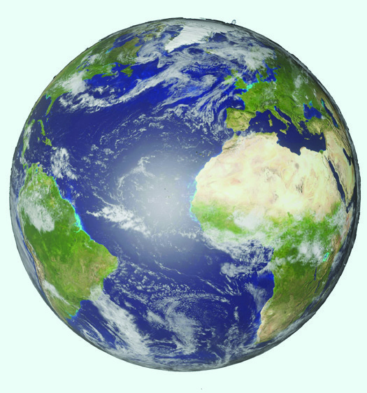

Page 49

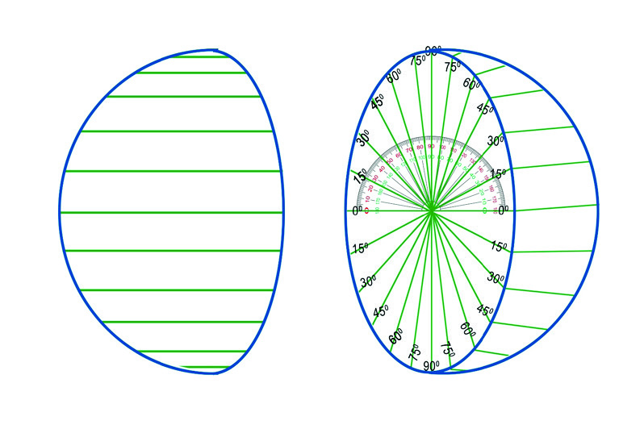
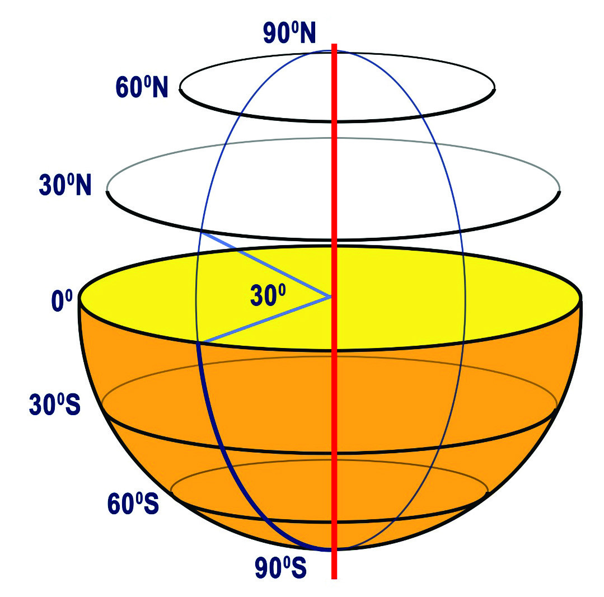
സാാമൂൂഹ്യയശാാസ്ത്രംം ക്ലാാസ്
സാാമൂൂഹ്യയശാാസ്ത്രംം ക്ലാാസ് VI
VI
49
ഗ്ലോøോബിിൽ നിിന്ന്് ഭൂൂപടത്തിിലേക്ക്്...
ഗ്ലോøോബിിൽ നിിന്ന്് ഭൂൂപടത്തിിലേക്ക്്...
ഭൂൂമിയുടെെ യഥാാർത്ഥ മാാതൃകയാാണല്ലോƽോ ഗ്ലോøോബ്. ഭൗമോ�ോപരിതല സവിശേ�ഷതകൾ മനസ്സിിലാക്കുു
ന്നതിിനുംം� സ്ഥാനനിിർണ്ണയം നടത്തുന്നതിിനുംം� ഗ്ലോøോബ് ഉപയോ�ോഗിിക്കുുന്നു.
ഗ്ലോøോബിലെ� നെ�ടുുകെ�യുംം� കുറുകെ�യുുമുള്ള രേ�ഖകൾ എന്താണെ�ന്ന്് മുൻക്ലാാസുകളിിൽ പരിചയ
പ്പെെƀട്ടതാാണല്ലോƽോ. ഈ രേ�ഖകളുുടെെ കൂൂടുതൽ സവിശേ�ഷതകൾ പരിചയപ്പെെƀടാംDZ.
അക്ഷാംംശരേ�ഖകൾ (Lines of Latitude)
ഭൂൂകേ�ന്ദ്രംം ആധാരമാാക്കി ഭൂൂമധ്യയരേ�ഖയുടെെ ഇരുവശത്തുംം� ഒരേ� കോ�ോണീീയ അകലത്തിിലുളള
ബിന്ദുുക്കളെ�
തമ്മിൽ ബന്ധിിപ്പിച്ചുുകൊ�ൊണ്ട് വരയ്ക്കുുന്ന സാങ്കല്പിക രേ�ഖകളാാണ്് അക്ഷാംംശ രേ�ഖകൾ.
ഭൗമോ�ോപരിതലത്തിിൽ ഭൂൂമധ്യയരേ�ഖയ്ക്ക് സമാാന്തരമാായി വരയ്ക്കുുന്ന അക്ഷാംംശവൃത്തങ്ങളാണിവ.
അക്ഷാംംശരേ�ഖകൾ വരച്ചുു നോ�ോക്കിിയാലോ�ോ
?
അക്ഷാംംശരേ�ഖകൾ വരച്ചുു നോ�ോക്കിിയാലോ�ോ
?
അകം പൊ�ൊള്ളയല്ലാത്ത ഒരു റബ്ബർപന്തിനെ� രണ്ട് തുല്യഭാഗങ്ങളായി ഛേേyദിി
ക്കുുക. രണ്ട് പകുതിയിലുംം� കോ�ോൺമാാപിനി ഉപയോ�ോഗിിച്ച് ചിത്രത്തിിൽ
കാണുന്നതുുപോ�ോലെ� 00 മുതൽ 900 വരെെ കോ�ോണ
ളവു
കൾ രേ�ഖപ്പെെƀടുത്തുക. കോ�ോണ
ളവുകൾ അടിസ്ഥാന
മാാക്കി ഛേേyദിിച്ച ഭാഗത്തിിന്റെെź മധ്യയത്തിിലേ�ക്ക്് ചിത്ര
ത്തിിൽ കാണുന്നതുുപോ�ോലെ� രേ�ഖകൾ വരച്ച് യോ�ോജിി
പ്പിക്കൂ. ഇനി ഈ വരകളെ�
ഉപരിതലത്തിി
ലേ�ക്ക്് നീട്ടി വരച്ച് തുല്യ കോ�ോണ
ളവുകളെ� യോ�ോജിി
പ്പിക്കൂ. തുടർന്ന് മറ്റേ� പകുതിയിലുംം� ഇതുപോ�ോലെ�
വരച്ചുുചേ�ർക്കുുക. രണ്ട് പകുതികളും�ം ചേ�ർത്ത് ഒട്ടി
ക്കുുക. അക്ഷാംംശവൃത്തങ്ങൾ വരച്ച പന്ത് ലഭ്യമാാകുംം�.
ചിിത്രംം 4.1
ചിത്രം 4.1 നിരീീക്ഷിച്ച് ഏറ്റവുംം� വലിയ അക്ഷാംംശ
വൃത്തം (Circle of Latitude) കണ്ടെടെĬത്തൂ.
00 അക്ഷാംംശവൃത്തമാാണ്് ഏറ്റവുംം� വലുപ്പമുള്ളതെ�ന്ന്്
കണ്ടെടെĬത്തിിയല്ലോƽോ. ഇതാാണ്് ഭൂൂമധ്യയരേ�ഖ (Equator).
ഗ്ലോøോബിൽ ഭൂൂമധ്യയരേ�ഖയുടെെ വടക്കുംം�തെ�ക്കുുമാായി
അക്ഷാംംശരേ�ഖകൾ വരച്ചിരിക്കുുന്നത്് നിരീീക്ഷിക്കൂ.
എല്ലാ അക്ഷാംംശവൃത്തങ്ങൾക്കുംം� ഒരേ� വലുപ്പമാാണോ�ോ?
ഭൂൂമധ്യയരേ�ഖയിൽനിന്ന് ഇരുവശങ്ങളിലേ�ക്ക്് പോ�ോകുു
ന്തോ�ോറും�ം അക്ഷാംംശവൃത്തങ്ങളുടെെ വലുപ്പം കുറഞ്ഞുു
വരുന്നതാായി കാണാംം.
Page 50

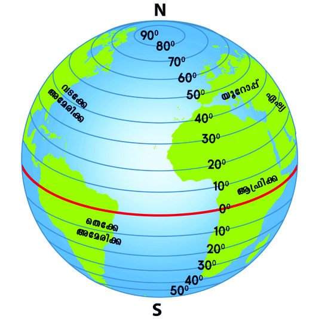
സാാമൂൂഹ്യയശാാസ്ത്രംം ക്ലാാസ്
സാാമൂൂഹ്യയശാാസ്ത്രംം ക്ലാാസ് VI
VI
50
ഭാാഗംം
ഭാാഗംം 1
ഭൂൂമധ്യയരേ�ഖയെ� അടിസ്ഥാനമാാക്കി ഭൂൂമിയെ� രണ്ട് അർ
ധഗോuോളങ്ങളായി സങ്കല്പിക്കാംം. ഭൂൂമധ്യയരേ�ഖയുടെെ വടക്കുു
ഭാഗത്തുുള്ള അർധഗോuോളം ഉത്തരാാർധഗോuോളം (Northern
Hemisphere) എന്നുംം� തെ�ക്കുുഭാഗത്തുുള്ള അർധഗോuോളം
ദക്ഷിണാർധഗോuോളം (Southern Hemisphere) എന്നുംം� അറിി
യപ്പെെƀടുന്നു.
ഗ്ലോøോബ് നിരീീക്ഷിച്ച് തന്നിിരിക്കുുന്ന പട്ടിക പൂർത്തിിയാാക്കൂ.
ഉത്തരാാർധഗോuോളത്തിിൽ
ഉത്തരാാർധഗോuോളത്തിിൽ
ഉൾപ്പെെƀട്ട ഭൂൂഖണ്ഡങ്ങൾ
ഉൾപ്പെെƀട്ട ഭൂൂഖണ്ഡങ്ങൾ
ദക്ഷിണാർധഗോuോളത്തിിൽ
ദക്ഷിണാർധഗോuോളത്തിിൽ
ഉൾപ്പെെƀട്ട ഭൂൂഖണ്ഡങ്ങൾ
ഉൾപ്പെെƀട്ട ഭൂൂഖണ്ഡങ്ങൾ
രണ്ട് അർധഗോuോളങ്ങളി
രണ്ട് അർധഗോuോളങ്ങളി
ലുമാായി വ്യാാ�പിച്ചുുകിടക്കുുന്ന
ലുമാായി വ്യാാ�പിച്ചുുകിടക്കുുന്ന
ഭൂൂഖണ്ഡങ്ങൾ
ഭൂൂഖണ്ഡങ്ങൾ
ഭൂൂമധ്യയരേ�ഖ (00 അക്ഷാംംശവൃത്തം) യിൽ നിന്നുംം� വടക്കോ�ോട്ടും�ം
തെ�ക്കോ�ോട്ടും�ം പോ�ോകുുന്തോ�ോറും�ം അക്ഷാംംശവൃത്തങ്ങളുടെെ വലുപ്പം
കുറഞ്ഞുുവരുന്നതാായി കാണുന്നിില്ലേേƽ. അക്ഷാംംശവൃത്തങ്ങളുടെെ
വലുപ്പം കുറഞ്ഞുുവന്ന് 900 വടക്ക്്, 900 തെ�ക്ക്് എന്നീ ബിന്ദുുക്ക
ളിൽ അവസാനിക്കുുന്നതാായി കാണാംം. 900 വടക്കുുള്ള അക്ഷാംംശ
ത്തെ� ഉത്തരധ്രുുവം (North Pole) എന്നുംം� 900 തെ�ക്കുുള്ള അക്ഷാംം
ശത്തെ� ദക്ഷിണധ്രുുവം (South Pole) എന്നുംം� വിളിക്കുുന്നു.
ഭൂൂമധ്യയരേ�ഖയ്ക്ക് വടക്കുുള്ള അക്ഷാംംശങ്ങൾ ഉത്തര അക്ഷാംംശങ്ങൾ
എന്നുംം� തെ�ക്കുുള്ള അക്ഷാംംശങ്ങൾ ദക്ഷിണ അക്ഷാംംശങ്ങൾ
എന്നുംം� അറിിയപ്പെെƀടുന്നു.
ദക്ഷിണധ്രുുവം
ദക്ഷിണധ്രുുവം
(South Pole)
(South Pole)
ഉത്തരധ്രുുവം
ഉത്തരധ്രുുവം
(North Pole)
(North Pole)
90oN
90oS
ഉത്തരാാർധഗോോuോളംം
ഉത്തരാാർധഗോോuോളംം
(Northern Hemisphere)
(Northern Hemisphere)
ദക്ഷിണാർധഗോോuോളംം
ദക്ഷിണാർധഗോോuോളംം
(Southern Hemisphere)
(Southern Hemisphere)
N
S
ചിിത്രംം 4.2
ചിിത്രംം 4.3
ചിിത്രംം 4.4
ചിത്രത്തിിൽ ഉത്തരധ്രുുവവുംം� ദക്ഷിണധ്രുുവവുംം� നിരീീക്ഷിക്കൂ. ധ്രുുവങ്ങളെ� യോ�ോജിിപ്പിച്ചുു
കൊ�ൊണ്ട് ഭൂൂമിക്കുുള്ളിലൂടെെ ഒരു നേ�ർരേ�ഖ സങ്കല്പിച്ചാൽ അതാാണ്് ഭൂൂമിയുടെെ അച്ചുുതണ്ട് (Axis).
ആശയവ്യക്തതയ്ക്കാായുള്ള
ചിിത്രീകരണം
ം
Page 51
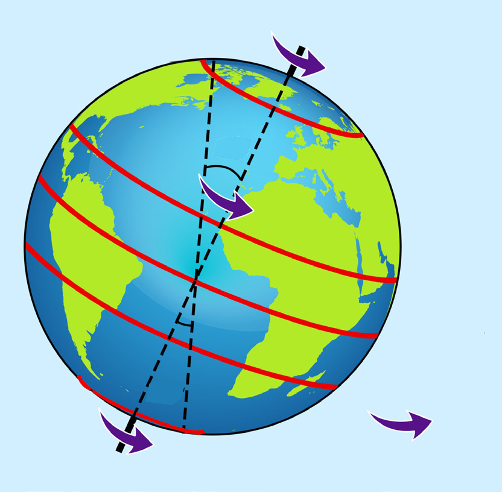

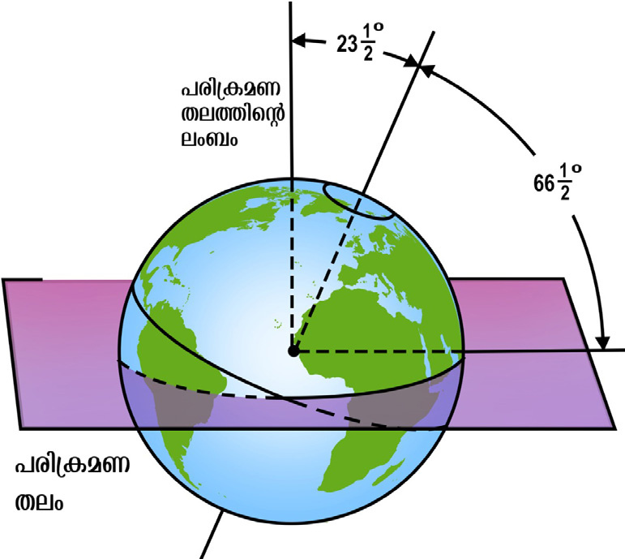
സാാമൂൂഹ്യയശാാസ്ത്രംം ക്ലാാസ്
സാാമൂൂഹ്യയശാാസ്ത്രംം ക്ലാാസ് VI
VI
51
ഗ്ലോøോബിിൽ നിിന്ന്് ഭൂൂപടത്തിിലേക്ക്്...
ഗ്ലോøോബിിൽ നിിന്ന്് ഭൂൂപടത്തിിലേക്ക്്...
രേഖാംംശരേഖകൾ (Lines of Longitude)
ഭൂൂകേsന്ദ്രത്തെĹ ആധാാരമാാക്കിി ഉത്തര-ദക്ഷിിണധ്രുുവങ്ങളെെ ബന്ധിിപ്പിിച്ചുുകൊsൊണ്ട്് ഭൗമോ�ോപരിതലത്തി
ലൂടെെ വരയ്ക്കുുന്ന സാാങ്കല്പിിക രേ�ഖകളാണ് രേ�ഖാംശരേ�ഖകൾ. ഒരേ� വലുപ്പത്തി
ിലുളള അർധവൃത്തങ്ങളാ
ണിവ. രേ�ഖാംശരേ�ഖകളെെ അടിസ്ഥാാനമാാക്കിിയാാണ് ഭൂൂമിയിൽ സമയംം നിർണ്ണയിക്കുന്നത്. പ്രധാാന
രേ�ഖാംശരേ�ഖകളാണ് 0o രേ�ഖാംശരേ�ഖയുംം� 180o രേ�ഖാംശരേ�ഖയുംം�. 1o ഇടവിട്ട്് ഇരു ധ്രുുവങ്ങളെെയുംം�
ബന്ധിിപ്പിിച്ചുുകൊsൊണ്ട്് രേ�ഖാംശരേ�ഖകൾ വരയ്ക്കുുകയാാണെ�ന്ന്് സങ്കൽപ്പിിക്കൂ. എങ്കിൽ നമുക്ക് 360
രേ�ഖാംശരേ�ഖകൾ വരയ്ക്കാൻ കഴിിയുംം�.
ഈ സാാങ്കല്പിിക അച്ചുുതണ്ടിനെ� ആധാാരമാാക്കിിയാാണ് ഭൂൂമി ഭ്രമണം
ം ചെെxയ്യുുന്നത്. അച്ചുുതണ്ടിന്
ഭൂൂമിയുടെെ പരിക്രമണതലത്തിന്റെെź ലംബത്തിൽനിന്ന് 23½ ചരിവുണ്ട്് ചിത്രംം 4.5 ബി നിരീക്ഷിിച്ച്
അച്ചുുതണ്ടിന്റെെź ചരിവ് തിരിച്ചറിിയൂ.
90O വടക്ക്്
0O
23½ തെക്ക്്
66½
½ വടക്ക്്
O
66½ തെക്ക്്
O
O
23½ വടക്ക്്
O
90O തെക്ക്്
23
23½
O
23
23½
O
ഭൂൂമധ്യയരേഖ
(Equator)
ദക്ഷിിണാായനരേഖ
(Tropic of Capricorn)
ഉത്തരായണരേഖ
(Tropic of Cancer)
അന്റാാർട്ടിിക്് വൃത്തം
(Antarctic Circle)
ആർട്ടിിക്് വൃത്തം
(Arctic Circle)
ചിിത്രംം 4.5 എ
ചിിത്രംം 4.5 ബിി
ചിത്രംം 4.5 എ നിരീക്ഷിിച്ച് പ്രധാാനപ്പെ�ട്ട അക്ഷാംശരേ�ഖകളുടെെ പട്ടിക പൂർത്തി
യാാക്കൂ.
പ്രധാാന അക്ഷാംംശരേഖകൾ
പ്രധാാന അക്ഷാംംശരേഖകൾ
ഡിിഗ്രിി അളവ്്
ഡിിഗ്രിി അളവ്്
ഭൂൂമധ്യരേ�ഖ
ഭൂൂമധ്യരേ�ഖ
0O
ഉത്തരായണരേ�ഖ
ഉത്തരായണരേ�ഖ
........................................................
........................................................
........................................................
........................................................
23½
23½ തെ�ക്ക്
തെ�ക്ക്
ആർട്ടിക് വൃത്തം
ആർട്ടിക് വൃത്തം
........................................................
........................................................
അന്റാർട്ടിക് വൃത്തം
അന്റാർട്ടിക് വൃത്തം
66½
66½ തെ�ക്ക്
തെ�ക്ക്
O
O
O
O
O
O
ആശയവ്യക്തതയ്ക്കാായുള്ള
ചിിത്രീകരണംം
ആശയവ്യക്തതയ്ക്കാാ
യുള്ള ചിിത്രീ
കരണംം
Page 52

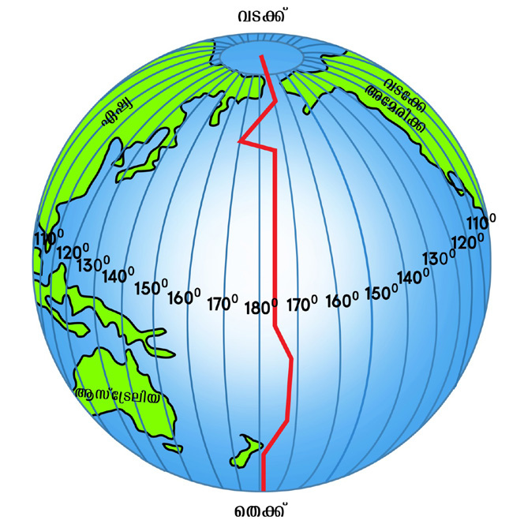
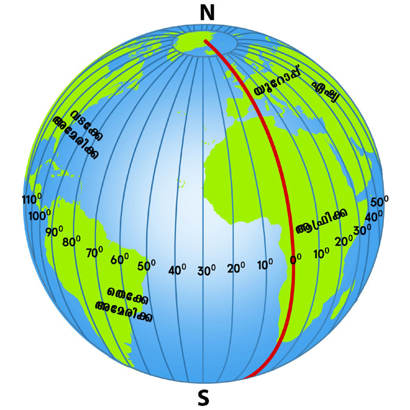
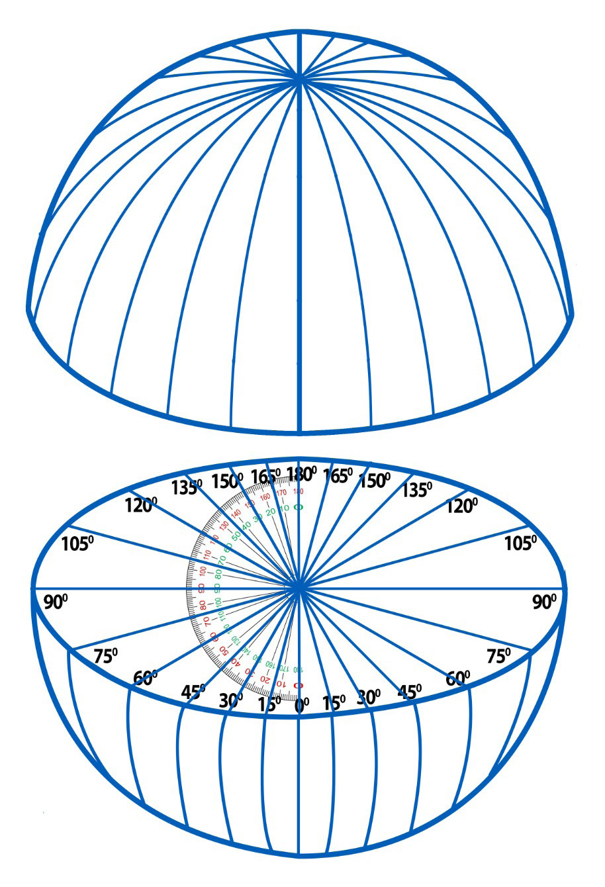
സാാമൂൂഹ്യയശാാസ്ത്രംം ക്ലാാസ്
സാാമൂൂഹ്യയശാാസ്ത്രംം ക്ലാാസ് VI
VI
52
ഭാാഗംം
ഭാാഗംം 1
അക്ഷാംശരേ�ഖകൾ
വരച്ചതുുപോ�ോലെ�
ചിത്രങ്ങൾ നിരീക്ഷിിച്ച് പന്തിിൽ രേ�ഖാം
ശരേ�ഖകൾ വരച്ച് അളവുകൾ രേ�ഖപ്പെ�
ടുത്തൂ.
ചിത്രംം 4.6, 4.7 എന്നിവ നിരീക്ഷിിക്കൂ. പ്രധാാന രേ�ഖാംശരേ�ഖകൾ പ്രത്യേ�േകമാായി അടയാാളപ്പെ�ടുു
ത്തിയിരിക്കുന്നത് കണ്ടിില്ലേേƽ. ഗ്ലോøോബ് നിരീക്ഷിിച്ച് ഈ രേ�ഖകളെെ തിരിച്ചറിിയൂ. ഇവയുടെെ പ്രത്യേ�േക
തകൾ എന്താണ്?
ചിിത്രംം 4.6
ചിിത്രംം 4.7
0O രേ�ഖാംശരേ�ഖയെ� പ്രൈം�ം മെെറിിഡിിയൻ (Prime Meridian) എന്നാണ് വിളിക്കുന്നത്. ലണ്ടന്്
സമീീപമുള്ള ഗ്രീീനിച്ച് എന്ന സ്ഥലത്ത് കൂടി ഈ രേ�ഖ കടന്നുപോ�ോകുന്നതുകൊsൊണ്ട്് ‘ഗ്രീീനിച്ച് രേ�ഖ’
എന്നുംം� ഇത് അറിിയപ്പെ�ടുുന്നു. 00 രേ�ഖാംശരേ�ഖയുടെെ നേ�രെെ എതിർവശത്തുള്ള രേ�ഖയാാണ് 180o
രേ�ഖാംശരേ�ഖ. ഇതിനെ� ആധാാരമാാക്കിിയാാണ് അന്താരാഷ്ട്ര ദിനാങ്കരേ�ഖ (International Date Line)
വരച്ചിരിക്കുന്നത്. അന്താരാഷ്ട്ര ദിനാങ്കരേ�ഖ ഒരു നേ�ർരേ�ഖയല്ല. കാരണം അന്വേ�േഷിിച്ചറിിയൂ.
പ്രധാാന രേഖാംംശരേഖകൾ
ചിിത്രംം 4.6, 4.7ആശ
യവ്യക്തതയ്ക്കാായുള്ള
ചിിത്രീകരണംം
Page 53
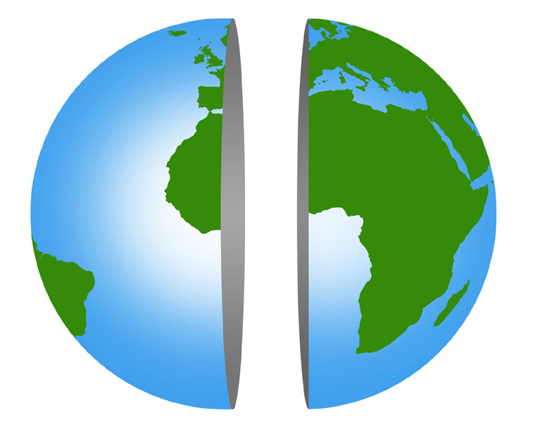

സാാമൂൂഹ്യയശാാസ്ത്രംം ക്ലാാസ്
സാാമൂൂഹ്യയശാാസ്ത്രംം ക്ലാാസ് VI
VI
53
ഗ്ലോøോബിിൽ നിിന്ന്് ഭൂൂപടത്തിിലേക്ക്്...
ഗ്ലോøോബിിൽ നിിന്ന്് ഭൂൂപടത്തിിലേക്ക്്...
പടിിഞ്ഞാാറേേ അർധഗോuോളം
(Western Hemisphere)
കിഴക്കേേÚ അർധഗോuോളം
(Eastern Hemisphere)
ചിിത്രംം 4.8
ചിിത്രംം 4.9
പ്രൈം�ം മെെറിിഡിിയനെ� ആധാാരമാാക്കിി ഭൂൂമിയെ� കിഴക്കേ� അ�ർധഗോuോളമെെന്നുംം� (Eastern Hemisphere)
പടിഞ്ഞാാറേ� അർധഗോuോളമെെന്നുംം� (Western Hemisphere) രണ്ടായി തിരിക്കാം. ഗ്രീീനിച്ച് രേ�ഖയ്ക്ക്
കിഴക്കുള്ള രേ�ഖാംശങ്ങളെെ കിഴക്കൻ രേ�ഖാംശങ്ങൾ എന്നുംം� പടിഞ്ഞാാറുള്ളവയെ� പടിഞ്ഞാാറൻ
രേ�ഖാംശങ്ങൾ എന്നുംം� വിളിക്കുന്നു.
ചിത്രംം 4.8 നിരീക്ഷിിക്കൂ. പടിഞ്ഞാാറേ� അർധഗോuോളവുംം� കിഴക്കേ� അർധഗോuോളവുംം�
തിരിച്ചറിിയൂ. ചുവടെെ നൽകിയിരിക്കുന്ന രാജ്യയങ്ങൾ ഏതൊ�ൊക്കെ�
അർധഗോuോളത്തി
ലാണ് സ്ഥിതിചെെxയ്യുുന്നതെ�ന്ന് ഗ്ലോøോബിന്റെെź സഹാായത്തോĹോടെെ കണ്ടെ�ത്തിി രാജ്യയങ്ങ
ളുടെെ നേ�രെെ രേ�ഖപ്പെ�ടുുത്തൂ.
• ഇന്ത്യ
...........................................................
• അമേ�രിിക്കൻ ഐക്യനാടുകൾ
...........................................................
• ബ്രസീൽ
...........................................................
• ഇന്റോźോനേ�ഷ്യ
...........................................................
അക്ഷാംശ-രേ�ഖാംശ രേ�ഖകൾ പരിചയപ്പെ�ട്ടല്ലോƽോ. അക്ഷാംശ-
രേ�ഖാംശ രേ�ഖകളെെ അടിസ്ഥാാനമാാക്കിിയാാണ് ഭൂൂമിയിൽ ഒരു
സ്ഥലത്തിന്റെെźയോ�ോ പ്രദേ�ശത്തിന്റെെźയോ�ോ വസ്തുുവിന്റെെźയോ�ോ
കൃത്യമാായ സ്ഥാാനം നിർണ്ണയിക്കുന്നത്.
അക്ഷാംശ-രേ�ഖാംശ രേ�ഖകളെെ ചിത്രീകരിച്ചിരിക്കുന്നത്
നോ�ോക്കൂൂ (ചിത്രംം 4.9). അക്ഷാംശ-രേ�ഖാംശ രേ�ഖകളുടെെ
ജാലികയാാണിത്. ഇതിനെ� ഗ്രാറ്റിിക്കൂൾ (Graticule) എന്ന് വിളി
ക്കുന്നു. ഭൂൂപടങ്ങളിലുംം� അറ്റ് ലസുകളിലുംം� അക്ഷാംശ-രേ�ഖാംശ
രേ�ഖകളുടെെ ജാലിക കാണാൻ കഴിിയുംം�.
Page 54

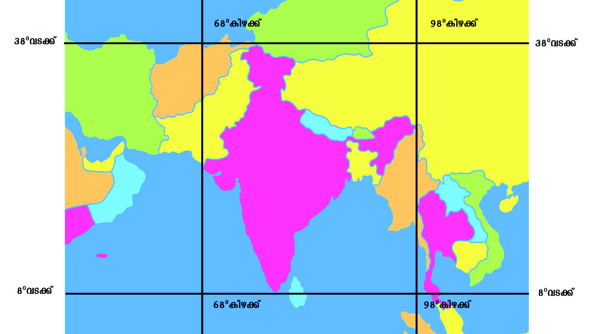

സാാമൂൂഹ്യയശാാസ്ത്രംം ക്ലാാസ്
സാാമൂൂഹ്യയശാാസ്ത്രംം ക്ലാാസ് VI
VI
54
ഭാാഗംം
ഭാാഗംം 1
ചിിത്രംം 4.10
ചിത്രം നിരീീക്ഷിക്കൂ. ഇന്ത്യ
യുടെെ സ്ഥാനം ഏതൊ�ൊക്കെ�
അക്ഷാംംശ-രേ�ഖാംംശങ്ങൾക്കി
ടയിിലാണെ�ന്ന്് കണ്ടെടെĬത്തിി
പട്ടികപ്പെെƀടുത്തൂ.
ഇന്ത്യയുടെെ സ്ഥാനം
അക്ഷാംംശംം
...................................... മുതൽ
...................................... വരെെ
രേ�ഖാംംശം
...................................... മുതൽ
...................................... വരെെ
ഭൂൂപ്രക്ഷേ�പങ്ങൾ (Map Projections)
ഭൂൂമിയുടെെ ഉപരിതല സവിശേ�ഷതകളുുടെെ സൂക്ഷ്മമാായ പഠനത്തിിന് ഗ്ലോøോബ് മാാത്രം മതിിയാാ
കുമോ�ോ?
ഇന്ത്യയുടെെ സ്ഥാനം ഭൂൂമിയിലെ�വിിടെെയാാണെ�ന്ന്് കൃത്യമാായി നിർണ്ണയിക്കാൻ അക്ഷാംംശ-
രേ�ഖാംംശ രേ�ഖകളുുടെെ ജാലികയാാണ്് നമ്മെ� സഹായിച്ചത്്. ഭൂൂപടനിിർമ്മാണത്തിിനുുള്ള ചട്ടക്കൂ
ൂട്
ഈ അക്ഷാംംശ-രേ�ഖാംംശങ്ങളുടെെ ജാലികയാാണ്്.
ഭൗമോ�ോപരിതല സവിശേ�ഷതകളെ�
ചിത്രീകരിിച്ചിട്ടുുളള ഒരു പരന്ന പ്രതലമാാണ്് ഭൂൂപടം എന്ന്
നിങ്ങൾക്കറിിയാംം.
ഭൂൂമിയുടെെ ഉപരിതലംം വക്രമാാണെ�ങ്കിിലുംം� ഭൂൂപടം നിർമ്മിക്കേ�ണ്ടത് പരന്ന പ്രതലത്തിിലാണ്്.
ഉരുണ്ട പ്രതലത്തിിലെ� സവിശേ�ഷതകളെ�
പരന്ന പ്രതലത്തിിലേ�ക്ക്് മാാറ്റി വരയ്ക്കുുന്നത്് ഭൂൂപട നിർ
മ്മാണത്തിിലെ� പ്രധാന വെ�ല്ലുവിളിയാാണ്്. ഒരു ഗ്ലോøോബിനെ� പരത്തിി നമുുക്ക് എങ്ങനെ� ഭൂൂപടം
നിർമ്മിക്കാൻ കഴിിയുംം�. ചിത്രത്തിിൽ കാണുന്നതുുപോ�ോലെ� ഒന്ന് പരത്തിിനോ�ോക്കിിയാാലോ�ോ.
Map not to scale
Page 55
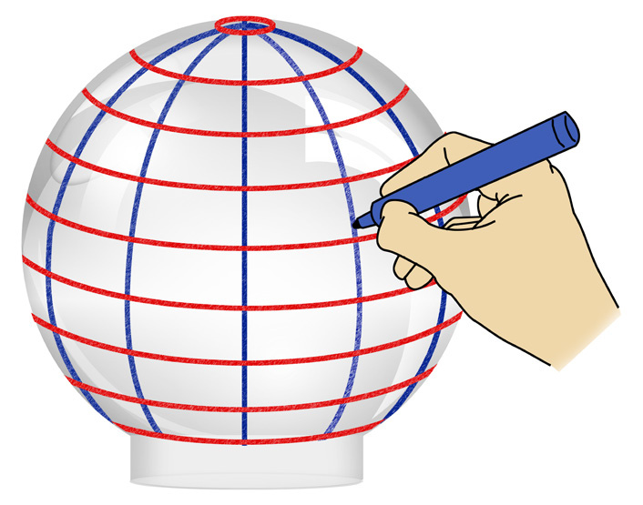
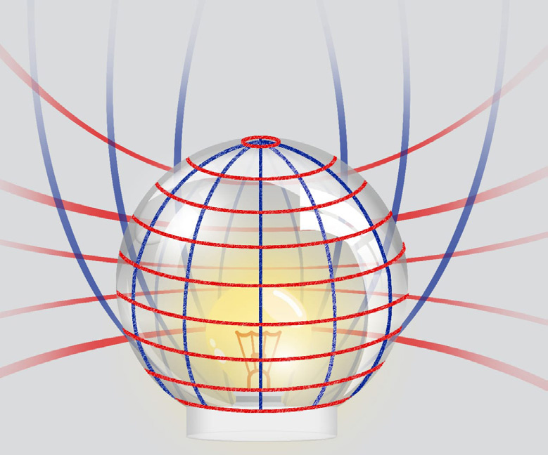
സാാമൂൂഹ്യയശാാസ്ത്രംം ക്ലാാസ്
സാാമൂൂഹ്യയശാാസ്ത്രംം ക്ലാാസ് VI
VI
55
ഗ്ലോøോബിിൽ നിിന്ന്് ഭൂൂപടത്തിിലേക്ക്്...
ഗ്ലോøോബിിൽ നിിന്ന്് ഭൂൂപടത്തിിലേക്ക്്...
ഗ്ലോøോബിനെ� പരന്ന പ്രതലമാാക്കിി മാാറ്റിിയപ്പോ�ോൾ ധ്രുുവപ്രദേ�ശങ്ങളും�ം ചില വൻകരകളും�ം മുറിിഞ്ഞു
പോ�ോയതാായി കാണുന്നില്ലേേƽ. ഇത്തരത്തിൽ ഗ്ലോøോബിനെ� പരത്തി ഭൂൂപടം നിർമ്മിിച്ചാൽ വികലമാായ
ഭൂൂപടമാാകുംം� കിട്ടുക. ഗ്ലോøോബിനെ� ഒരു ട്രേേğസിങ്് പേ�പ്പർ ഉപയോ�ോഗിിച്ച് പൊ�ൊതിിഞ്ഞശേ�ഷം
ം ഭൂൂഖ
ണ്ഡങ്ങൾ വരയ്ക്കാൻ ശ്രമിക്കൂ. മടക്കുകളും�ം ചുളിവുകളും�ം കാരണം അപാകതകൾ നിറഞ്ഞ ഭൂൂപട
മല്ലേേƽ നമുക്ക് ലഭിക്കുക. ഗോuോളാകൃതിയിലുളള ഗ്ലോøോബിന്റെെź ഉപരിതല സവിിശേ�ഷതകളെെ ഇത്ത
രത്തിലുളള അപാകതകൾ ഇല്ലാതെ� പരന്ന പ്രതലത്തിലേ�ക്ക്് എങ്ങനെ� പകർത്തി ഒരു ഭൂൂപടം
നിർമ്മിിക്കാം. ഇതിനായി ഭൂൂപ്രക്ഷേ�പങ്ങൾ എന്ന സങ്കേ�തംം ഉപയോ�ോഗിിക്കുന്നു.
അക്ഷാംശ-രേ�ഖാംശ രേ�ഖകളുടെെ ജാലികയെ� (Graticule) ഏതെ�ങ്കിലുംം� പരന്ന പ്രതലത്തിലേ�ക്ക്്
ശാസ്ത്രീീയമാായി പകർത്തുന്ന രീതിയാാണ് ഭൂൂപ്രക്ഷേ�പങ്ങൾ. സുതാര്യമാായ ഗ്ലോøോബിനുള്ളിൽ ഒരു
പ്രകാശസ്രോǟോതസ്സ്് സജ്ജീീകരിച്ച് അക്ഷാംശ-രേ�ഖാംശ രേ�ഖകളും�ം ഭൂൂതലസവിിശേ�ഷതകളും�ം പരന്ന
പ്രതലത്തിലേ�ക്ക്് മാാറ്റിി വരയ്ക്കുുകയാാണ് പരമ്പരാഗത രീതി.
ഇവ എങ്ങനെ�യാാണ് വരയ്ക്കുുന്നതെ�ന്ന് നോ�ോക്കിി
യാാലോ�ോ. ഒരു സ്ഫടികജാാർ വായ്ഭാഗം അടിയിൽ
വരുന്ന രീതിയിൽ വയ്ക്കുുക. ജാറിിന്റെെź ഉപരിതലത്തിൽ
ചിത്രത്തി
ിൽ കാണുന്നതുപോ�ോലെ� മാാർക്കർ പെ�ൻ
ഉപയോ�ോഗിിച്ച് അക്ഷാംശരേ�ഖകളും�ം രേ�ഖാംശരേ�ഖകളും�ം
വരച്ചുുനോ�ോക്കൂൂ.
ഈ സ്ഫടികജാാറിിന് മുകളിലായി ഒരു പരന്ന പ്രതലം വയ്ക്കുുക.
ജാറിിനുള്ളിൽ ഒരു പ്രകാശസ്രോǟോതസ്സ്് വയ്ക്കുുക. എന്താണ്
കാണുന്നത്?
ജാറിിന് മുകളിൽ വരച്ചിട്ടുളള അക്ഷാംശ-രേ�ഖാംശ
രേ�ഖകളുടെെ നിഴൽ പരന്ന പ്രതലത്തിലേ�ക്ക്് പതി
യുന്നത് കാണാം. ഈ ജാലികയെ� പരന്ന പ്രത
ലത്തിൽ വരച്ചെ�ടുുക്കൂ. വരച്ചെ�ടുുത്ത അക്ഷാംശ-
രേ�ഖാംശ രേ�ഖകളുടെെ ഡിിഗ്രി അളവുകൾ
രേ�ഖപ്പെ�ടുുത്തിയതിിനുശേ�ഷംം അവയെ� അടിസ്ഥാാ
നമാാക്കിി ഭൂൂഖണ്ഡങ്ങളോോ രാജ്യയങ്ങളോോ വരച്ചുു
ചേേxർത്ത് ഭൂൂപടം നിർമ്മിിക്കാവുന്നതാണ്. ഈ
രീതിയിൽ ഭൂൂമിയിലെ� ഏതുപ്രദേ�ശത്തിന്റെെźയുംം�
അക്ഷാംശ-രേ�ഖാംശ രേ�ഖകളുടെെ ജാലിക പകർത്തി
ആ പ്രദേ�ശത്തിന്റെെź ഭൂൂപടം നിർമ്മിിക്കാൻ കഴിിയുംം�.
വ്യത്യസ്ത ആകൃതിയിലുളള പ്രതലങ്ങളെെ ഉപയോ�ോ
ഗിച്ചുുകൊsൊണ്ടാാണ് ഇത് സാാധ്യമാാക്കുന്നത്. പ്രതലം,
പ്രകാശസ്രോǟോതസ്സ്് എന്നിവയുടെെ സ്ഥാാനം മാാറ്റിി വിവിധങ്ങളായ ഭൂൂപ്രക്ഷേ�പങ്ങൾ തയ്യാറാക്കാൻ
കഴിിയുംം�. പ്രതലത്തിന്റെെź ആകൃതിയുടെെ അടിസ്ഥാാനത്തിൽ ഭൂൂപ്രക്ഷേ�പങ്ങളെെ മൂന്നായി തിരിക്കാം.
അവയെ� പരിചയപ്പെ�ട്ടാാലോ�ോ.
ചിിത്രംം 4.11
ചിിത്രംം 4.12
Page 56
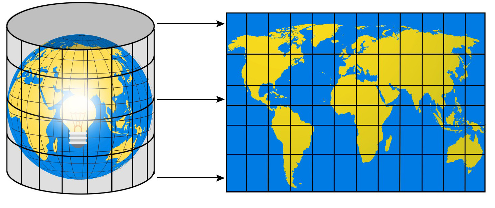
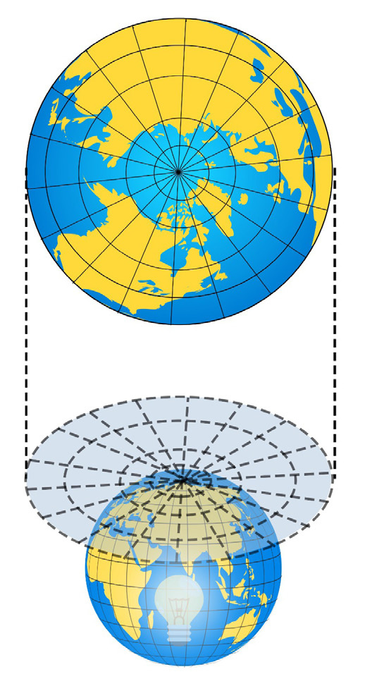
സാാമൂൂഹ്യയശാാസ്ത്രംം ക്ലാാസ്
സാാമൂൂഹ്യയശാാസ്ത്രംം ക്ലാാസ് VI
VI
56
ഭാാഗംം
ഭാാഗംം 1
സിിലിിൻഡ്രിിക്കൽ പ്രക്ഷേ�പംം (Cylindrical Projection)
ചിത്രംം 4.13 നിരീക്ഷിിക്കൂ.
സുതാര്യമാായ ഗ്ലോøോബിൽ ഒരു പ്രകാശസ്രോǟോതസ്സ്് സജ്ജീീകരിച്ചിരിക്കുന്നു. അതിനെ� ആവരണം
ചെെxയ്ത്് സിലിൻഡർ ആകൃതിയിലുള്ള പ്രതലം വച്ചിരിക്കുന്നു. ഗ്ലോøോബിനെ� വലയം ചെെxയ്തിരി
ക്കുന്ന സിലിൻഡർ ആകൃതിയിലുള്ള പ്രതലത്തിലേ�ക്ക്് അക്ഷാംശ-രേ�ഖാംശങ്ങളുടെെ ജാലിക
പകർത്തുന്നു. ഇതാണ് സിലിൻഡ്രിിക്കൽ പ്രക്ഷേ�പംം. ഭൂൂമധ്യരേ�ഖാപ്രദേ�ശങ്ങളുടെെ കൃത്യതയാാർന്ന
ഭൂൂപടചിത്രീകരണത്തിനായി ഈ ഭൂൂപ്രക്ഷേ�പംം പ്രയോ�ോജനപ്പെ�ടുുത്താവുന്നതാണ്.
ചിിത്രംം 4.13
സിലിൻഡർ
ആകൃതിയി
ലുളള പ്രതലത്തിൽ ഭൂൂതല
സവിിശേ�ഷതകൾ പകർത്തി
നിർമ്മിിച്ചാൽ ലഭിക്കുന്ന ഭൂൂപടം.
ചിിത്രംം 4.14
ശീർഷതല പ്രക്ഷേ�പംം (Zenithal Projection)
ചിത്രംം 4.14 നിരീക്ഷിിച്ച് ഏത് പ്രദേ�ശത്തെĹ അക്ഷാംശ-രേ�ഖാംശ
രേ�ഖകളുടെെ ജാലിക പകർത്തുന്നതിനായിട്ടാണ് ശീർഷതലപ്ര
ക്ഷേ�പംം ഉപയോ�ോഗിിക്കുന്നത് എന്ന് കണ്ടെ�ത്തൂൂ.
സുതാര്യമാായ ഒരു ഗ്ലോøോബിന്റെെź മധ്യഭാഗത്ത് പ്രകാശസ്രോǟോതസ്സുംം�
മുകൾഭാഗത്ത് പരന്ന പ്രതലവുംം� വയ്ക്കുുന്നു. പ്രകാശ സ്രോǟോതസ്സ്്
തെ�ളി
ിക്കുമ്പോ�ോൾ മുകളിൽ വച്ചിട്ടുള്ള പ്രതലത്തിൽ ആ പ്രദേ�
ശത്തെĹ അക്ഷാംശ-രേ�ഖാംശ രേ�ഖകളുടെെ ജാലിക തെ�ളി
ിയുന്നു.
ഇത്തരത്തിൽ ശീർഷതല പ്രക്ഷേ�പംം ഉപയോ�ോഗിിച്ച് അക്ഷാംശ
-രേ�ഖാംശങ്ങളുടെെ ജാലിക ഒരു പരന്ന പ്രതലത്തിൽ തയ്യാറാ
ക്കുന്നു.
പരന്ന പ്രതലത്തിൽ ധ്രുുവപ്ര
ദേ�ശങ്ങളുടെെ ഭൂൂതലസവിിശേ�
ഷതകൾ പകർത്തി നിർമ്മിി
ച്ചാൽ ലഭിക്കുന്ന ഭൂൂപടം
ചിിത്രംം 4.13, 4.14 ആശയവ്യക്തത
യ്ക്കാായുള്ള ചിിത്രീകരണംം. തോ�ോത്
അടിിസ്ഥാാനമാാക്കിയല്ല
Page 57
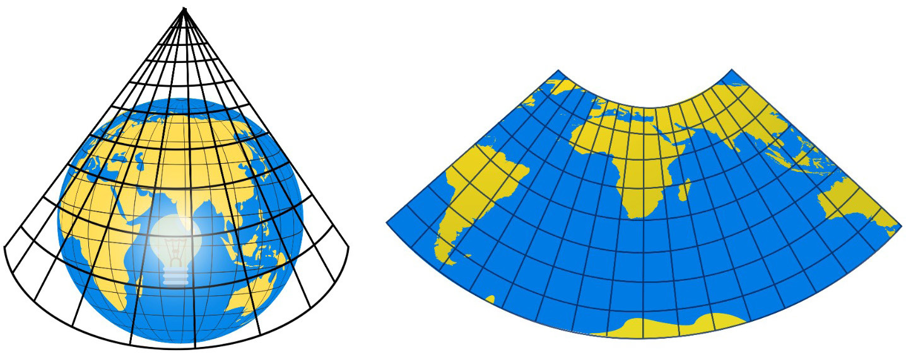

സാാമൂൂഹ്യയശാാസ്ത്രംം ക്ലാാസ്
സാാമൂൂഹ്യയശാാസ്ത്രംം ക്ലാാസ് VI
VI
57
ഗ്ലോøോബിിൽ നിിന്ന്് ഭൂൂപടത്തിിലേക്ക്്...
ഗ്ലോøോബിിൽ നിിന്ന്് ഭൂൂപടത്തിിലേക്ക്്...
കോ�ോണിിക്കൽ പ്രക്ഷേ�പംം (Conical Projection)
ചിിത്രംം 4.15
കോsോൺ ആകൃതിയിലുളള പ്രതലത്തിൽ
അക്ഷാംശ-രേ�ഖാംശ രേ�ഖകളുടെെ ജാലിക
പകർത്തി നിർമ്മിിച്ചാൽ ലഭിക്കുന്ന ഭൂൂപടം.
കോsോൺ ആകൃതിയിലുള്ള പ്രതലത്തിൽ അക്ഷാംശ-രേ�ഖാംശ രേ�ഖകളുടെെ ജാലികയെ� പകർത്തി തയ്യാറാക്കുന്ന
പ്രക്ഷേ�പ രീതിയാാണ് കോsോണിക്കൽ പ്രക്ഷേ�പംം. അക്ഷാംശ-രേ�ഖാംശ രേ�ഖകളുടെെ നിഴലുുകൾ
കോsോൺ ആകൃതിയിലുള്ള പ്രതലത്തിൽ വരച്ച് ഭൂൂപടം നിർമ്മിിക്കുന്നു. മധ്യഅക്ഷാംശരേ�ഖാ പ്രദേ�
ശങ്ങളുടെെ ഭൂൂപടനിർമ്മാണത്തിന് ഈ ഭൂൂപ്രക്ഷേ�പംം കൂടുതലായി ഉപയോ�ോഗിിക്കുന്നു.
ഭൂൂപ്രക്ഷേ�പങ്ങളുടെെ സവിിശേ�ഷതകൾ ഉൾപ്പെ�ടുുത്തിയ ആശയപടം പൂർത്തി
യാാക്കൂ.
സിലിൻഡ്രിിക്കൽ
പ്രക്ഷേ�പംം
........................
........................
• പ്രക്ഷേ�പതലം പരന്നത്
• പൊ�ൊതുുവെ� ധ്രുുവപ്രദേ�ശങ്ങളുടെെ ചിത്രീകര
ണത്തിനായി ഉപയോ�ോഗിിക്കുന്നു
.........................
.........................
........................
........................
.................................................
.................................................
.................................................
.................................................
.................................................
.................................................
.................................................
.................................................
സവിിശേ�ഷതകൾ
സവിിശേ�ഷതകൾ
സവിിശേ�ഷതകൾ
ആശയവ്യക്തതയ്ക്കാായുള്ള ചിിത്രീ
കരണംം. തോ�ോത് അടിിസ്ഥാാന
മാാക്കിയല്ല.
Page 58

സാാമൂൂഹ്യയശാാസ്ത്രംം ക്ലാാസ്
സാാമൂൂഹ്യയശാാസ്ത്രംം ക്ലാാസ് VI
VI
58
ഭാാഗംം
ഭാാഗംം 1
മൂൂന്നുുതരംം ഭൂൂപ്രക്ഷേäപങ്ങൾ പരിചയപ്പെƀട്ടല്ലോƽോ.
ഭൂൂമിയുടെെ ഉപരിതല സവിിശേേഷതകളെെ പരന്ന പ്രതലത്തിിലേ�ക്ക്് മാാറ്റുുന്നതിിന്് ഭൂൂപ്രക്ഷേäപ
ങ്ങളെെ കൂടാാതെ� ഗണിിതശാാസ്ത്ര സങ്കേേÿതവുംം� ഉപയോ�ോഗിക്കുന്നുുണ്ട്്. നൂതന സാാങ്കേേÿതികവിിദ്യയ
യുടെെ സഹാായത്തോ�ോടെെ സൂക്ഷ്മതയുംം� കൃത്യതയുംം� നിലനിർത്തിി ഇന്ന് ഭൂൂപടങ്ങൾ നിർമ്മിിച്ചുു
വരുുന്നുു.
നഗരസഭയിിൽ ജിി.ഐ.എസ് മാാപ്പിിങ്് പദ്ധതിിക്ക്് തുടക്കം
രവ്യയവസ്ഥ (GIS) ഉപ
യോ�ോഗപ്പെ�ടുുത്തിി നഗര
സഭയുടെെ സമ്പൂൂർണ്ണ
ഡിിജിിറ്റലൈൈസേ�ഷൻ
പദ്ധതിിയ്ക്ക്് തുടക്കമാായിി.
വിവരശേഖരണത്തിിന്
കൂൂടുതൽ കൃത്യതയുംം�
വേ�ഗതയുംം� ശാസ്ത്രീീയ
തയുംം� നൽകുക എന്ന
ലക്ഷ്യയത്തോ�ോടെെ ഭൂവിവ
പ്രകൃതിദത്തവുംം� മനുുഷ്യനിർമ്മിിതവുമാായ എല്ലാാ ഭൗമോ�ോപരിതല സവിിശേേഷതകളുടെെയുംം� കൃത്യ
മാായ സ്ഥാാനംം, ദിശ, സമുദ്രനിരപ്പിൽ നിന്നുുളള ഉയരംം എന്നിവ തിരിച്ചറിിയുന്നതിിന്് ഭൂൂതല
വിിശകലനവുംം� ഭൂൂപടവാായനയുംം� അനിവാാര്യമാാണ്. ഭൗമോ�ോപരിതലത്തിിലെ� ജലസ്രോǟോതസ്സുുകൾ,
വനങ്ങൾ, കൃഷിസ്ഥലങ്ങൾ, തരിശുഭൂൂമികൾ, ഗ്രാാമങ്ങൾ, പട്ടണങ്ങൾ, ഗതാാഗത വാാർത്താാവിിനി
മയ മാാർഗങ്ങൾ മുതലാായവ ചിത്രീീകരിച്ചിട്ടുളള വ്യത്യസ്ത ഭൂൂപടങ്ങൾ ആധുുനികകാാലത്ത് ധാാരാാള
മാായി ഉപയോ�ോഗിക്കുന്നുുണ്ട്്. ഗോ�ോളാാകൃതിയിലുളള ഭൂൂമിയുടെെ ഉപരിതലസവിിശേേഷതകൾ പരന്ന
പ്രതലത്തിിലേ�ക്ക്് പകർത്തുമ്പോƠോൾ വരുുന്ന മാാറ്റങ്ങളും�ം തിരിച്ചറിിഞ്ഞല്ലോƽോ. നിത്യജീവിിതത്തിിൽ
ഭൂൂപടങ്ങൾ ഉപയോ�ോഗപ്പെƀടുത്തുന്ന അവസരങ്ങളിൽ ശരിിയാായ ഭൂൂപടവാായന അനിവാാര്യമാാണ്.
നിത്യജീവിിതത്തിിൽ ഭൂൂവിിവരവ്യയവസ്ഥ (GIS) ഉപയോ�ോഗപ്പെƀടുത്തുന്ന വിിവിിധ
സന്ദർഭങ്ങൾ പട്ടികപ്പെƀടുത്തൂ.
വാാർത്ത നിരീക്ഷിച്ചല്ലോƽോ.
എന്താാണ്് ഭൂൂവിിവരവ്യയവസ്ഥ (Geographic Information System) എന്ന് ചിന്തിച്ചിട്ടുണ്ടോ�ോ?
ഭൂൂമിശാാസ്ത്ര വിിവരങ്ങൾ ശേേഖരിക്കുകയുംം� വിിശകലനം ചെ�യ്യുുകയുംം� സൂക്ഷിച്ചുുവയ്ക്കുു
കയുംം� അവശ്യസന്ദർഭങ്ങളിൽ ഭൂൂപടങ്ങൾ, ഗ്രാാഫുുകൾ, പട്ടികകൾ മുതലാായ രൂപങ്ങളാായി ദൃശ്യവൽക്ക
രിച്ച് പ്രയോ�ോജനപ്പെƀടുത്തുന്ന സംവിിധാാനമാാണ്
് ഭൂൂവിിവര വ്യവസ്ഥ. ഭൂൂപടങ്ങളും�ം അടിസ്ഥാാന
വിിവരസ്രോǟോതസ്സുുകളാായി ഭൂൂവിിവരവ്യയവസ്ഥയിിൽ ഉൾപ്പെƀടുത്താാറു
ുണ്ട്്. ഭൂൂപടങ്ങളെെ കമ്പ്യൂൂ�ട്ടറിിന്റെെź
സഹാായത്താാൽ ഡിിജിറ്റൽ രൂപത്തിിലാാക്കി അക്ഷാംശ-രേ�ഖാംംശസ്ഥാാനംം നിർണ്ണയിക്കുന്നുു. ഈ
ഡിിജിറ്റൽ ഭൂൂപടത്തെ� അടിസ്ഥാാന ഭൂൂപടമാാക്കിിക്കൊ�ൊണ്ട്് അതിൽ നിന്നുംം� വിിവരങ്ങൾ ശേേഖരിച്ച്
വിിവിിധങ്ങളാായ ആവശ്യങ്ങൾക്ക്് പ്രയോ�ോജനപ്പെƀടുത്തുന്നുു. ഭൂൂപടനിിർമ്മാാണം
ം, വിിഭവ പരിപാാലനം,
പ്രകൃതിദുരന്ത നിവാാരണം
ം, ടൂറിിസം, ഗതാാഗതം, വാാർത്താാവിിനിമയംം തുടങ്ങിയ മേ�ഖലകളിൽ ഈ
സാാങ്കേേÿതികവിിദ്യയ ഉപയോ�ോഗപ്പെƀടുത്താം.
Page 59
സാാമൂൂഹ്യയശാാസ്ത്രംം ക്ലാാസ്
സാാമൂൂഹ്യയശാാസ്ത്രംം ക്ലാാസ് VI
VI
59
ഗ്ലോøോബിിൽ നിിന്ന്് ഭൂൂപടത്തിിലേക്ക്്...
ഗ്ലോøോബിിൽ നിിന്ന്് ഭൂൂപടത്തിിലേക്ക്്...
തുടർപ്രവർത്തനങ്ങൾ
ഉത്തരാാർധഗോuോളത്തിിൽ
മാാത്രം ഉൾപ്പെെƀടുന്ന
രാജ്യങ്ങൾ
ദക്ഷിണാർധഗോuോളത്തിിൽ
മാാത്രം ഉൾപ്പെെƀടുന്ന
രാജ്യങ്ങൾ
രണ്ട് അർധഗോuോളങ്ങളിലു
മാായി വ്യാാ�പിച്ചുുകിടക്കുുന്ന
രാജ്യങ്ങൾ
• ചുവടെെ നൽകിയിട്ടുുള്ള വർക്ക്ഷീറ്റ്് പൂർത്തിിയാാക്കൂ.
ഏറ്റവുു വലിയ അക്ഷാംംശവൃത്തം
ഭൂൂമധ്യയരേ�ഖ
ഭൂൂമധ്യയരേ�ഖയുടെെ വടക്കുുഭാഗത്തുുള്ള അർധഗോuോളം
.............................................
................................................................
ദക്ഷിണാർധഗോuോളം
ഭൂൂകേ�ന്ദ്രത്തെ� ആധാരമാാക്കി ഉത്തര-ദക്ഷിണ ധ്രുുവങ്ങളെ�
ബന്ധിിപ്പിച്ച് കൊ�ൊണ്ട് വരയ്ക്കുുന്ന സാങ്കല്പിക രേ�ഖകൾ
.............................................
00 രേ�ഖാംംശരേ�ഖ
.............................................
................................................................
അന്താരാഷ്ട്രദിിനാങ്കരേ�ഖ
• ഇന്ത്യയുടെെ അക്ഷാംംശ-രേ�ഖാംംശ സ്ഥാനം കണ്ടെടെĬത്തിിയതുുപോ�ോലെ� തന്നിിട്ടുുളള രാജ്യ
ങ്ങളുടെെ അക്ഷാംംശ-രേ�ഖാംംശ സ്ഥാനം ഗ്ലോøോബ്, അറ്റ്്ലസ്
്, ലോ�ോകഭൂൂപടം എന്നിിവയു
ടെെ സഹായത്തോ�ോടെെ കണ്ടെടെĬത്തിി പട്ടിക പൂർത്തിിയാാക്കൂ.
രാാജ്യം�ം
അക്ഷാംംശ സ്ഥാാനം
രേ�ഖാംംശ സ്ഥാാനം
1
ജപ്പാൻ
.......... മുതൽ .......... വരെെ
.......... മുതൽ .......... വരെെ
2
ശ്രീലങ്ക
.......... മുതൽ .......... വരെെ
.......... മുതൽ .......... വരെെ
3
ആസ്രേğലിയ
.......... മുതൽ .......... വരെെ
.......... മുതൽ .......... വരെെ
• ഗ്ലോøോബ്, അറ്റ്്ലസ്
്, ലോ�ോകഭൂൂപടം എന്നിിവയുടെെ സഹായത്തോ�ോടെെ തന്നിിരിക്കുുന്ന
ലോ�ോകരാാജ്യങ്ങൾ ഏത് അർധഗോuോളത്തിിൽ ഉൾപ്പെെƀടുന്നുവെ�ന്ന്് പട്ടികയിിൽ രേ�ഖപ്പെെƀടുത്തൂ.
ബ്രസീൽ
നോ�ോർവെ�
കാാനഡ
ഇന്തോ�ോനേ�ഷ്യ
ദക്ഷിിണ ആഫ്രിിക്ക
കെ�നിിയ
സൗൗദിി അറേ�ബ്യ
അർജന്റീന
അംഗോuോള